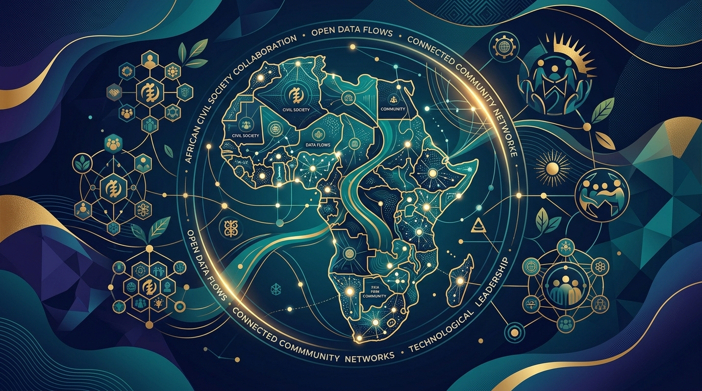

Données. IA. Compétences. Impact.
Renforcer les capacités des organisations de la société civile pour mieux comprendre, utiliser et gouverner les données et l'intelligence artificielle.

Les données et l'IA transforment déjà notre monde.
Les données ouvertes et l'IA transforment le travail, les politiques publiques, les organisations, l'accès à l'information et la participation citoyenne. Mais les OSC locales disposent encore de capacités limitées pour exploiter ces nouvelles opportunités. Le projet veut contribuer à réduire cette fracture.
Le travail & les métiers
Automatisation des tâches d'analyse et valorisation des profils hybrides orientés données dans les associations.
Les politiques publiques
Décisions étayées par les indicateurs chiffrés et suivi accru des budgets alloués aux services publics de base.
L'accès à l'information
Transparence par les portails ouverts et recul des asymétries d'information pour les citoyens.
Nos 4 Piliers
Une articulation cohérente pour accompagner les organisations de terrain vers l'autonomie stratégique.
OPEN DATA
Données ouvertes & Biens communs
Comprendre, rechercher, exploiter et valoriser les données ouvertes dans le respect des standards et des réalités africaines.
INTELLIGENCE ARTIFICIELLE
IA & IA générative pour l'action citoyenne
Découvrir les usages concrets de l'IA et de l'IA générative pour les OSC : synthèse documentaire, plaidoyer et veille.
GOUVERNANCE DES DONNÉES
Éthique, protection et responsabilité
Comprendre les enjeux de qualité, protection, responsabilité, partage et utilisation des données au regard des lois locales.
EMPLOYABILITÉ
Compétences numériques pratiques
Développer des compétences pratiques en Data, IA et transformation numérique pour pérenniser l'impact des équipes.
Notre Approche
Une démarche orientée vers l'action et l'impact mesurable.
APPRENDRE
Acquérir les fondamentaux sans jargon technique intimidant.
EXPÉRIMENTER
Pratiquer sur des cas d'usage réels avec des outils accessibles.
APPLIQUER
Intégrer les méthodes dans vos propres projets et rapports associatifs.
PARTAGER
Diffuser auprès de vos pairs et enrichir les biens communs numériques.
« Notre objectif n'est pas seulement de transmettre des connaissances, mais de permettre aux participants de les transformer en compétences et en actions concrètes. »
La transformation numérique doit aussi partir du terrain.
« Les OSC locales ne doivent pas seulement être utilisatrices des technologies. Elles doivent pouvoir comprendre les données, maîtriser les outils et participer aux décisions qui façonnent leur environnement numérique. »
Approche locale
Ancrée dans les réalités associatives des pays francophones.
Contenus francophones
Ressources et glossaires de pointe entièrement en français.
Cas d'usage africains
Exemples vérifiés : santé communautaire, budgets communaux et veille.
Apprentissage pratique
Exercices concrets réalisables avec des outils gratuits ou abordables.
Communauté d'entraide
Solidarité entre pairs et échanges continus sans barrière d'accès.
Thématiques Clés
Les sujets fondamentaux abordés dans nos programmes et ateliers.
Ressources
Consultez et téléchargez des kits pratiques en libre accès.
Exploiter l'Open Data pour son plaidoyer
Méthodologie pour structurer une campagne avec des indicateurs chiffrés vérifiés.
Prompts IA pour notes conceptuelles
Modèles de requêtes pour structurer un cadre logique de projet associatif.
Annuaire des portails d'Afrique de l'Ouest
Plus de 45 répertoires statistiques nationaux et sectoriels référencés.
10 logiciels no-code gratuits
Outils de visualisation et de cartographie sans abonnement obligatoire.
Cartographie citoyenne de la santé
Comment une association a documenté les déserts de santé en milieu périurbain.
Protection des données bénéficiaires
Replay vidéo et support de cours sur la sécurité numérique fondamentale.
Construisons une communauté qui apprend ensemble.
« Parce que la transformation numérique ne se décrète pas : elle se construit avec celles et ceux qui agissent sur le terrain. »
Une société civile capable d'agir dans l'économie des données et de l'IA.
Nos trois engagements fondamentaux pour l'avenir des organisations citoyennes.
OSC PLUS AUTONOMES
Mieux utiliser les données et les technologies.
Autonomie dans la collecte, le traitement et la valorisation sans dépendre continuellement de financements d'audits externes.
PROFESSIONNELS MIEUX PRÉPARÉS
Développer des compétences adaptées aux nouveaux métiers.
Compétences hybrides en data literacy, gestion de projets numériques et utilisation critique de l'IA générative.
CITOYENS MIEUX INFORMÉS
Comprendre les enjeux liés aux données et à l'intelligence artificielle.
Participation active aux débats de gouvernance, compréhension des algorithmes et défense de l'intérêt général.
Vous êtes une OSC, un professionnel ou un acteur engagé ?
Rejoignez une communauté qui veut rendre les données et l'IA plus accessibles.
Rejoindre la communauté